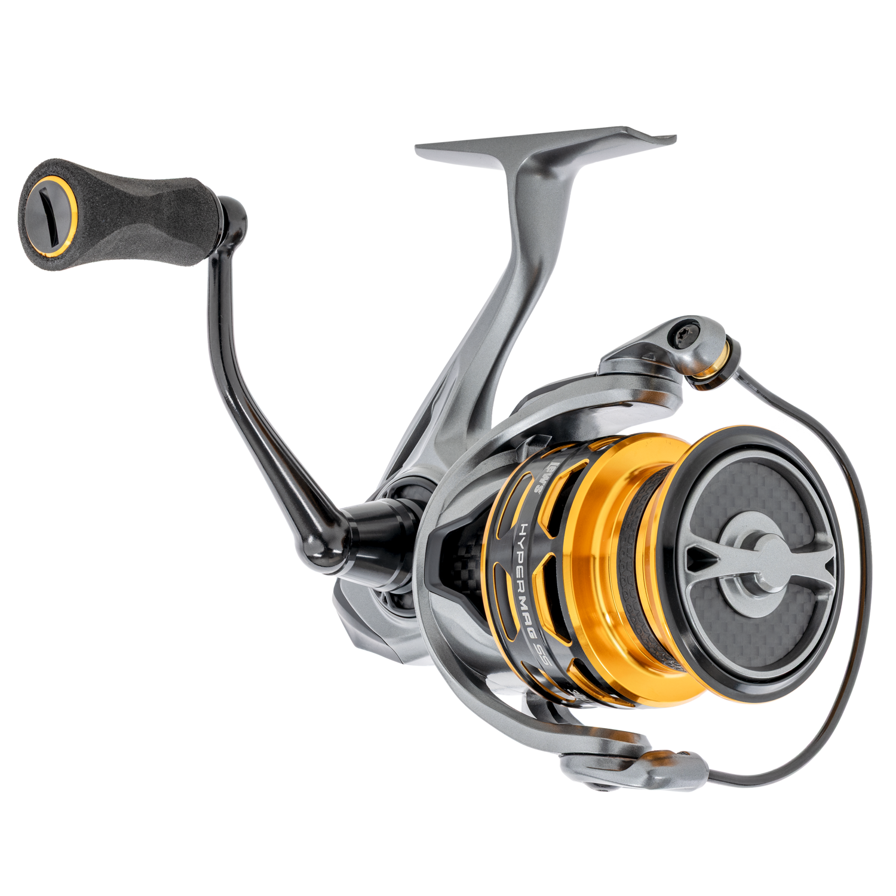

ReelCalc Reel Setup Guide
Lew's HyperMag Shallow Spool 300 Line Capacity & Reel Setup Guide
The shallow spool is the point of this 300: it is rated for 120 yards of 8 lb mono or 180 yards of 10 lb braid, rather than a large reserve of unused line. The 7.0:1 gearing retrieves a listed 40 inches per turn. EvenLay slow oscillation guides the line onto its shallow spool. Use the calculator below with your exact line to plan a full spool or work out optional backing.